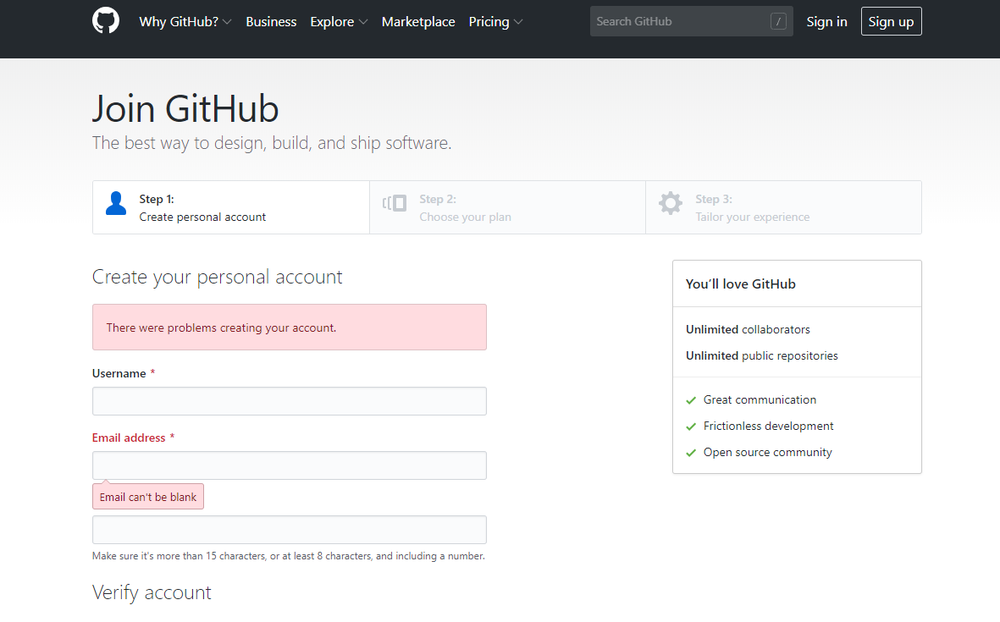
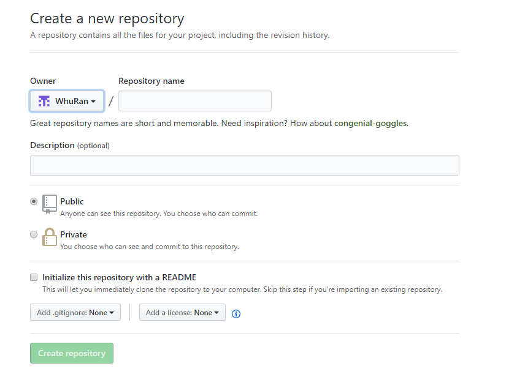
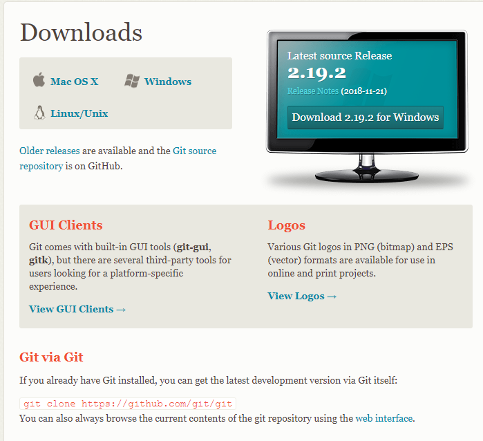
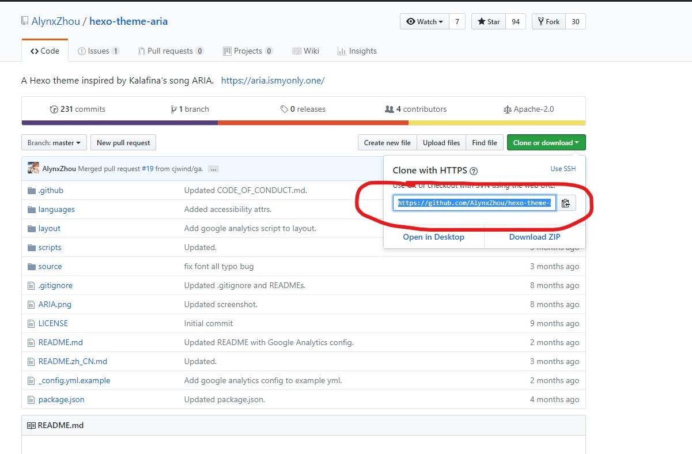

目录
创建Github域名
注册Github账号
首先，我们需要先注册一个Github账号，如果已经有了Github账号，则跳过这一步。值得注意的是，创建的username会与我们的域名一致，即我们的域名将会是username.github.io，不过后期我们也可以更改username。

创建仓库
注册好一个Github账号之后，我们需要创建一个仓库(repository)来存储我们的网站，点击首页New repository按钮新建一个仓库，Respository name 中的username.github.io 的username 一定与前面的Owner 一致，记住你的username下面会用到。

于是我们就创建好了一个Github域名。
安装Hexo
目前主要有三种比较流行的开源静态网站构建工具：Jekyll、Hugo以及Hexo。我们选择Hexo来构建个人主页，因为Hexo前端开发者居多，有许多炫酷的页面。Hexo基于Nodejs，所以在安装Hexo之前，我们需要安装Nodejs。
安装Git
首先我们从官网找到最新版的Git，选择Windows进行下载，下载完成后一路的“Next”，安装完成之后在cmd中输入“git –version”查看是否安装成功。

安装Nodejs
登录node官网选择对应的系统下载msi安装文件，下载好之后同样一路“Next”，安装完成之后在cmd中分别输入“node -v”和“npm -v”查看是否安装成功。
配置Nodejs环境。
在nodejs的安装主目录中新建文件夹：node_cache和node_global。在cmd中输入命令：1
2npm config set prefix "nodejs安装目录\node_global"
npm config set cache "nodejs安装目录\node_cache"
选择安装express模块在命令行中输入：npm install express -g (-g表示全局安装即安装到node_global目录下) 鼠标右键单击我的电脑→属性→高级系统设置→环境变量→在系统变量下新建NODE_PATH并输入“nodejs安装目录\node_global\node_modules”
安装Hexo
在上面所有步骤完成之后就可以安装Hexo了，在cmd中执行以下代码：1
2npm install hexo-cli -g
npm install hexo --save
安装完成之后，下面我们就可以生成博客了。
安装tranquilpeak主题
首先我们需要用Hexo初始化一个博客目录，然后更改一些自定义的配置，或者换一个自己喜欢的主题。
创建博客
在cmd中执行以下代码会创建一个folder的文件夹。1
hexo init folder
安装主题
为了使我们的主题足够炫酷，我们可以选择安装一个自己喜欢的主题，切换到刚刚生成的Hexo目录，安装主题，这里我选择的是tranquilpeak主题，首先下载tranquilpeak，解压缩之后重命名为tanilpeak复制到我们的themes目录下。
如果想要使用其他主题可以到更多主题中选择其中一个在详情页面中找到相应的GitHub的地址，然后复制地址执行以下命令:1
2
3cd foler
cd themes
$ git clone "复制的github地址" "自定义一个主题名称"
另一个获取主题的简单方式就是直接在GitHub中搜索”hexo-theme”就能够获得无数主题，随便找几个喜欢的下载,获取地址的操作步骤如下图所示：

更改配置
安装好主题之后，打开_config.yml文件，按照以下格式修改配置：1
2
3
4
5
6
7
8
9
10
11
12
13
14
15
16
17
18
19
20
21title: 武大没有郎 //你博客的名字
description: 读书·旅行·交友·运动·爱人
author: WRan //你的名字
language: zh-cn //语言 中文
url: http://localhost:4000
root: /
theme: tranquilpeak
post_assert_folder: true
relative_link: false
deploy:
type: git //使用Git 发布
repo: https://github.com/WhuRan/wran.github.io.git // 刚创建的GitHub仓库（可能需要自己添加此行）
feed:
type: atom
path: atom.xml
limit: 20
tranquilpeak设置
具体设置tranquilpeak的时候，可以参考作者的Github的指示。值得注意的地方主要有两点：
1、如果修改自己的工作和签名，我们需要到languages/zh-cn.yml文件中进行修改1
2
3
4
5author:
# 你的个人简介 (支持 Markdown 和 HTML 语法)
bio: "读书·旅行·交友·运动·爱人"
# 你的工作简介
job: "under postgraduate"
2、在设置文章的缩略图的时候，thumbnailImage是设置缩略图的位置，我们需要将hexo的_config.yml中的url改为”http://localhost:4000"，否则在执行"hexo s”的时候会加载不出来缩略图，当然发布到Github上的时候需要改为我们的Github网址。
撰写文章
在floder/source/_posts下创建我们的第一个博客，例如创建一个名为Hello.md的文件，然后输入内容。1
2
3
4
5
6
7
8
9
10
11
12
13
14
15
16
17
18
19
20
21
22
23
24
25
26
27
28
29
30
31
32
33
34
35
36
37---
title: 第一篇博客 //博客的标题
subtitle: 子标题
tags:
- Android
- 前端
clearReading: true
thumbnailImage: thumbnail_image.jpg
thumbnailImagePosition: bottom
autoThumbnailImage: true
metaAlignment: center
coverImage: cover_image.jpg
coverCaption: "图片说明"
coverMeta: in
coverSize: partial
comments: false
meta: false
actions: false
---
这里是文章的概览，显示在主页缩略内容上面
<!-- more -->
这里是自动生成的文章目录
<!-- toc -->
这是我们的第一篇博客
# 这是大标题
## 这是二级标题
## 这里有个本地图片

## 这里有个网络图片

测试
在cmd中执行以下代码：1
hexo s
测试服务启动，你可以在浏览器中输入https://localhost:4000 访问了。
安装hexo-deployer-git自动部署发布工具
1 | npm install hexo-deployer-git --save |
发布
测试没问题后，我们就生成静态网页文件发布至我们的Github pages 中。1
hexo clean && hexo g && hexo d
终端可能会让你输入Github的邮箱和密码(我的没有要求输入，可能因为之前输入过)，正确输入后，骚等片刻，就会把你的博客上传至Github 了。以后在每次把博客写完后，执行一下这个命令就可以直接发布了，非常方便。
查看效果
恭喜你能走到这一步，你的博客已经完成了，在浏览器中输入 https://username.github.io 就能够访问了。